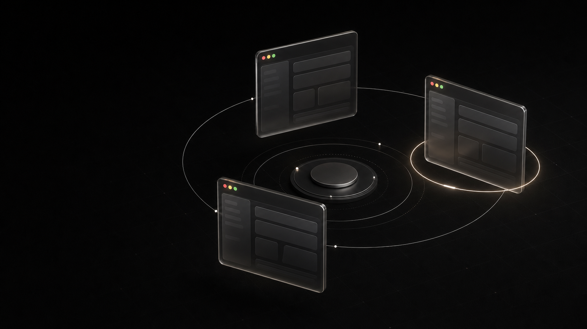

The problem
Profiles live apart. Your workflow should not.
Separate CODEX_HOME directories are useful, but remembering paths and rebuilding launch commands is busywork.
Local-first profile launcher for macOS
Choose a profile. Launch Codex CLI or the macOS app. Switching is always explicit—and authentication stays with the official Codex tools.
Free and open source · MIT · macOS 15+

Why OPM
The problem
Separate CODEX_HOME directories are useful, but remembering paths and rebuilding launch commands is busywork.
The choice
You select every profile yourself. Quota status informs; it never triggers account rotation.
The boundary
OPM never reads, copies, decodes, migrates, prints, or stores authentication tokens.
The result
Keep profiles isolated, see their status, and launch the right official Codex surface with a clear, explicit action.
See the workflow
Videos load only when you play them.
opm run work launches the real Codex process in the terminal.opm command-line workflow.
CODEX_HOME directories, then list them.opm doctor to verify the registry, Codex CLI, official app, and private directories.~/Applications.What it does
Select the profile first, then launch Codex CLI or the independently installed macOS app.
Read profile and quota status without turning it into automatic account selection.
Use a concise command-line tool or a focused AppKit and SwiftUI interface.
Use the macOS experience in English or Português.
Privacy by boundary
OPM stores local profile configuration and launch preferences. Authentication remains owned by the official codex executable inside each profile's CODEX_HOME.
Install
Get the latest signed, notarized release for macOS 15 or later. Install the official Codex CLI separately.
git clone https://github.com/mneves75/open-profile-manager.git && cd open-profile-manager && Scripts/bootstrap.sh && Scripts/check.sh && Scripts/install-local.shPrefer to inspect first? Read the installation guide.
Keep the choice yours